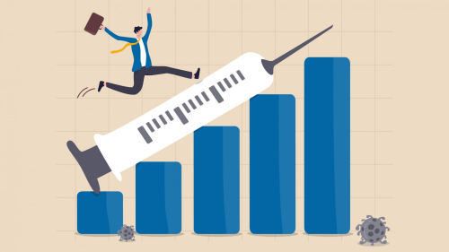
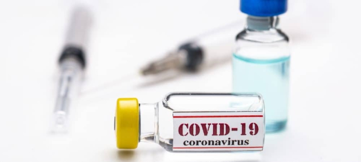

A demora na vacinação contra o coronavírus pode comprometer a recuperação da atividade econômica no Brasil. Quanto mais tempo o governo demorar para promover a vacinação ampla da população contra a covid-19, maior será o impacto econômico. O avanço da vacinação no Brasil dependerá de acordos para a importação dos imunizantes até que a produção local adquira uma escala relevante, o que só deverá ocorrer mais para o final do ano ou até mesmo em 2022. A demora na vacinação também pode levar comerciantes ao prejuízo pela falta de vendas, ou seja, o consumo em pequena escala da população. A expansão da covid-19 obriga os estados a adotarem “necessárias medidas de restrição à circulação de pessoas”, o que afeta de certa forma os bares e restaurantes.

Cerca de 50 países começaram o ano de 2021 vacinando parcelas das suas populações contra a covid-19. Segundo o RAF, o Brasil experimenta um ritmo lento de vacinação, com 780 mil doses ao dia. O documento classifica o “atraso no calendário de vacinação” como um “risco a ser monitorado”. “Risco cuja materialização pode piorar, o cenário reside em eventuais atrasos nos programas de vacinação. Economistas avaliam amplamente que a vacinação será uma das chaves para a recuperação da economia. O setor da economia chegou a cair muito, e continuava longe do nível anterior à pandemia na virada de 2020 para 2021. A chegada da vacina pode mudar esse cenário consideravelmente. Com uma parcela cada vez maior da população imunizada, mais gente deve se sentir confortável para sair de casa e, consequentemente, gastar mais.
